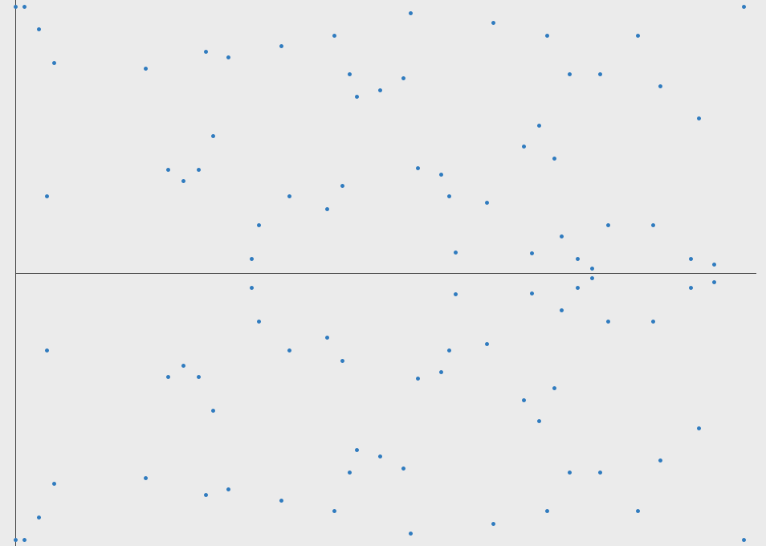

Encryption
Past, present, and future with quantum computers
Created by Darin Critchlow
Encryption involves two tasks
Encryption and Decryption
Encryption
The process of coding text
Decryption
Reverse to plain text

Why do we encrypt data?
- Secure important information
- Health Records
- Credit Card information
- Student Records
- etc.
- Prevents information from getting stolen or read
Types of Encryption
Symmetric and Asymmetric
Ancient Egypt
Disordered hieroglyphics were a very simple encryption method using simple substitution
Each picture in this case would be substituted with another resulting in an encoded message or ciphertext
Ancient Greeks
Scytale

Rome
Julius Caesar used what is known as the Caesar cipher to communicate securely with his troops

Encryption in War
Enigma machine invented by Artur Scheribus

How the Enigma works

Japanese Purple
Remnant of the Japanese Purple cipher recovered from their bombed-out embassy in Berlin
One Time Pad
The unbreakable code
plaintext : SECRETMESSAGE
one-time pad: CIJTHUUHMLFRU
ciphertext : UMLKLNGLEDFXY
Making the One Time Pad unbreakable
The key
- Must truly be random
- At least as long as the plaintext
- Never reused in whole or part
- Kept completely secret
Brute Force One Time Pad

Public / Private Keypairs

Diffie-Hellman
- Alice and Bob agree to use a modulus p = 23 and base g = 5 (which is a primitive root modulo 23).
- Alice chooses a secret integer a = 6, then sends Bob A = g^a mod p. A = 5^6 mod 23 = 8
- Bob chooses a secret integer b = 15, then sends Alice B = g^b mod p. B = 5^15 mod 23 = 19
- Alice computes s = B^a mod p. s = 19^6 mod 23 = 2
- Bob computes s = A^b mod p. s = 8^15 mod 23 = 2
- Alice and Bob now share a secret (the number 2).

Diffie-Hellman usage
- Secure Sockets Layer (SSL)
- Secure Shell (SSH)
- IP Security (IPSec)
Disadvantage of Diffie-Hellman
- You cannot send a message in the transition simply the result of the computation.
- Man in the middle attack

Enter RSA
Ron Rivest, Adi Shamir, and Leonard Adleman
- Sender encrypts with the recipients public key
- Recipient uses their secret private key to reveal plaintext
- Prime factorization of large numbers takes a long time
Elliptic Curve Cryptography

More realistic Elliptic Curve
This is the same Curve with only whole number points represented

Future of Encryption
Current encryption methods rely on complex mathematical problems—integer factorization, discrete logarithm problem and elliptic curves
Current computers are very slow at solving these problems
Quantum Computers

Can Quantum Computers Break Me?
Quantum computers explained